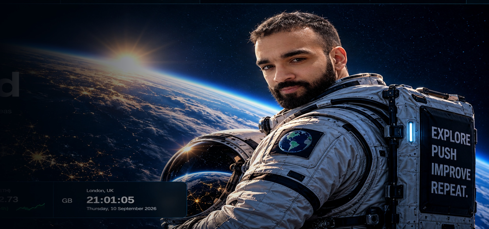

GitHub Pages
A simple static deployment keeps the core site transparent, portable and easy to version.
Turning a static portfolio into a living digital home for projects, technology, markets, writing and experiments.
The starting point was simple: create a personal website. The more useful question became how to make it worth returning to.
The project evolved into a command centre — part portfolio, part journal, part market radar and part build log. Instead of treating the homepage as a digital CV, the aim became to create a place that can change as my interests and projects change.

A simple static deployment keeps the core site transparent, portable and easy to version.
Market prices and technology headlines give selected parts of the interface fresh external data.
Projects, journal entries and personal viewpoints remain reviewed and intentionally published rather than auto-generated.
The desktop command-centre aesthetic collapses into touch-friendly navigation, cards and typography on smaller screens.
Established the dark space aesthetic, navigation and core portfolio structure.
Introduced market data, technology headlines, Market Radar and interactive elements.
Resolved ticker collisions, improved the astronaut hero, mobile layout, performance and accessibility.
Reframed the site as a Personal Command Centre with a Signal Board connecting Now, Projects, Journal, Radar and GitHub.
Ticker collisions. A duplicated marquee structure replaced competing animation tracks so live information could move continuously without overlapping.
Mobile density. Desktop navigation and wide data panels were reworked into a hamburger menu, stacked cards and responsive typography.
Visual hierarchy. The astronaut composition was positioned to preserve negative space for real HTML text instead of baking interface text into the artwork.
Static-site limits. The project separates truly live public-data components from personal content that requires deliberate publishing.
“A personal website becomes more useful when it is treated as a product, not a page.”
The biggest lesson from the project is that iteration matters more than trying to design the final version immediately. Small issues — mobile spacing, readability, loading, navigation, data freshness — become obvious only once the site is actually used.
The next goal is to use the platform to document independent projects, rather than continuing to redesign the platform itself.
A separate application built through the same cycle: explore, push, improve, repeat.
Back to projects →